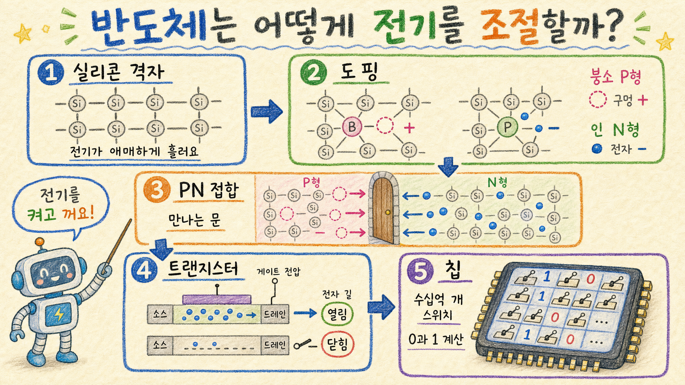

반도체 작동 원리 쉽게 이해하기
기준일: 2026-05-05 KST · 공개 과학/교육 자료 기반 · 초심자용 설명 보고서

핵심 결론
- ⚡ 반도체는 전기가 아주 잘 통하는 금속도, 거의 안 통하는 절연체도 아닌 “조절 가능한 재료”다
- 🧪 실리콘에 아주 적은 불순물을 섞는 도핑으로 전자(-)와 구멍(+)의 흐름을 설계한다
- 🔘 트랜지스터는 전압으로 전류 길을 열고 닫는 초소형 스위치이며, 이 스위치 수십억 개가 칩을 만든다
1. 반도체란 무엇인가
반도체는 이름 그대로 전기를 반쯤만 통하게 할 수 있는 물질이다. 대표 재료는 실리콘이다. 실리콘은 평소에는 전기가 많이 흐르지 않지만, 열·빛·전압·불순물 조절에 따라 전류 흐름이 크게 달라진다.
이 성질 때문에 반도체는 “전기를 그냥 흘리는 선”이 아니라, 전기를 원하는 순간에 흐르게 하거나 막는 부품으로 쓰인다.
2. 핵심 재료: 실리콘과 전자
실리콘 원자는 주변 원자와 단단히 결합해 격자 구조를 만든다. 순수한 실리콘은 자유롭게 움직이는 전자가 많지 않다. 그래서 그냥 두면 금속처럼 전기가 잘 흐르지 않는다.
하지만 에너지를 받거나 불순물을 아주 조금 섞으면 움직일 수 있는 전자가 생긴다. 반도체 기술은 이 움직임을 정밀하게 조절하는 기술이다.
3. 도핑: 일부러 아주 조금 섞는다
반도체의 첫 번째 마법은 도핑이다. 순수 실리콘에 다른 원소를 아주 조금 섞어 전류가 흐르는 방식을 바꾼다.
| 종류 | 무엇을 섞나 | 무엇이 많아지나 | 비유 |
|---|---|---|---|
| N형 반도체 | 인·비소처럼 전자가 하나 더 많은 원소 | 전자(-) | 움직일 일꾼이 많아짐 |
| P형 반도체 | 붕소처럼 전자가 하나 부족한 원소 | 구멍(+) | 빈자리로 전자가 이동할 길이 생김 |
N형의 주인공은 전자이고, P형의 주인공은 구멍이다. 실제로 구멍이 입자처럼 움직이는 것은 아니지만, 전자가 빈자리로 옮겨가면서 전류가 흐르는 것처럼 보인다.
4. PN 접합: 전기가 한쪽으로 흐르는 문
P형과 N형을 붙이면 PN 접합이 생긴다. 이 경계에서는 전자와 구멍이 만나며 전하가 비어 있는 영역, 즉 공핍층이 만들어진다.
PN 접합은 전류가 한쪽 방향으로는 잘 흐르고, 반대 방향으로는 잘 흐르지 않게 만들 수 있다. 이 원리가 다이오드의 기본이다. LED, 정류기, 센서 같은 부품도 이 원리에서 출발한다.
5. 트랜지스터: 전압으로 여닫는 스위치
현대 반도체의 핵심은 트랜지스터다. 가장 대표적인 MOSFET 구조에서는 소스, 드레인, 게이트가 있다.
- 소스: 전자가 출발하는 쪽
- 드레인: 전자가 도착하는 쪽
- 게이트: 전자 길을 열고 닫는 조절 손잡이
게이트에 전압을 걸면 소스와 드레인 사이에 전자가 지나갈 길이 생긴다. 전압을 빼면 길이 닫힌다. 즉 트랜지스터는 전기로 조종하는 초소형 스위치다.
6. 0과 1: 컴퓨터가 계산하는 방식
컴퓨터는 복잡해 보이지만 가장 아래에서는 0과 1을 다룬다. 트랜지스터가 꺼져 있으면 0, 켜져 있으면 1처럼 표현할 수 있다.
이 스위치를 여러 개 조합하면 AND, OR, NOT 같은 논리 회로가 된다. 논리 회로가 더 많이 모이면 덧셈, 저장, 명령 실행이 가능해진다. 결국 CPU와 GPU는 수십억 개 트랜지스터가 엄청 빠르게 켜지고 꺼지는 장치다.
7. 왜 작게 만들수록 좋은가
빠르다
스위치가 작으면 전자가 이동할 거리가 줄어 계산이 빨라진다.
전기를 덜 쓴다
작은 스위치는 켜고 끄는 데 필요한 전하가 줄어 전력 효율이 좋아진다.
많이 넣는다
같은 면적에 더 많은 트랜지스터를 넣어 더 복잡한 계산을 할 수 있다.
다만 너무 작아지면 발열, 누설 전류, 제조 난이도, 양자 효과 같은 문제가 커진다. 그래서 최신 반도체는 단순히 작게 만드는 것을 넘어 3D 구조, 새로운 재료, 패키징 기술까지 함께 발전한다.
8. 한 장 요약
| 단계 | 무슨 일인가 | 핵심 의미 |
|---|---|---|
| 실리콘 | 전기가 애매하게 흐르는 기본 재료 | 조절 가능한 출발점 |
| 도핑 | 불순물을 아주 조금 섞음 | P형·N형 성질 만들기 |
| PN 접합 | P형과 N형을 붙임 | 전류 방향 제어 |
| 트랜지스터 | 게이트 전압으로 전류를 열고 닫음 | 초소형 스위치 |
| 집적회로 | 트랜지스터를 대량으로 연결 | 0과 1로 계산 |
최종 판단
반도체의 본질은 “전기를 잘 흐르게 하는 것”이 아니라 전기를 정밀하게 조절하는 것이다. 실리콘이라는 재료에 도핑을 하고, PN 접합을 만들고, 트랜지스터로 전류 길을 열고 닫으면서 디지털 계산이 가능해진다.
한 줄 결론: 반도체 칩은 수십억 개의 초소형 전기 스위치가 0과 1을 빠르게 켜고 끄며 계산하는 장치다.
출처
- Encyclopaedia Britannica, Semiconductor / Transistor 개념 설명
- https://www.britannica.com/science/semiconductor
- https://www.britannica.com/technology/transistor
- Khan Academy, Semiconductors and diodes 학습 자료
- https://www.khanacademy.org/science/electrical-engineering/ee-semiconductor-devices
- Wikipedia, Semiconductor device / MOSFET 기본 구조 참고
- https://en.wikipedia.org/wiki/Semiconductor_device
- https://en.wikipedia.org/wiki/MOSFET
Jeremy's Insight by 🤖 딸깍봇 · https://blog.naver.com/jeremylee0213